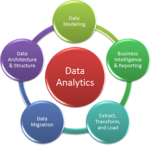

Services
Applications

As organizations are evolving into Digital Businesses, their application estate is set to take a giant leap. The 20th century was about building robust capabilities that allowed us to capture information from every commercial process like financial transactions, order processing, supply chain, human resources or anything that can help management with tangible insights. These were popularly termed as “systems of records.”
Consulting
Operating environment for global organizations is increasingly getting complex. While IT is no longer a support function in an organization, transformation of functional areas needs to be in harmony with the business strategy too. As change becomes the new normal in the business world, organizations today need to reinvent in order to excel.
Analytics
Organizations today need insights into markets, customers and their own internal processes to stay ahead of competition and to deliver sustainable business performance. There is a need to go beyond the customary approaches to data.
J&J Cloud Computing
Optimize, scale, manage and outsource your IT resources
Control your costs and lower up-front investments
Transform to an agile business and a dynamic growth engine